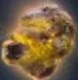
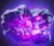
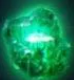
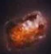
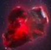

| Название камня |
Цвет |
Артефакт |
Описание |
Изображение |
| Камень пространства |
Голубой Тессеракт |
Тессеракт |
Даёт возможность перемещать как себя, так и всё окружающее в любую точку. |
.png) |
| Камень разума |
Жёлтый |
Скипетр |
Наделяет своего обладателя эмпатией, телепатией и телекинезом. |
 |
| Камень силы |
Фиолетовый |
Сфера |
Повышает силу, прочность и все остальные способности своего обладателя, а также питает остальные пять артефактов. |
 |
| Камень времени |
Зеленый Глаз |
Агамотто |
Позволяет путешествовать во времени, а также останавливать, замедлять и ускорять временной поток. Помимо этого, камень также замедляет старение своего обладателя. |
 |
| Камень души |
Оранжевый |
Душа |
Данный камень позволяет забирать души других живых существ. Внутри него находится так называемое «карманное измерение», в котором обитают те, чьи души забрал владелец камня. |
 |
| Камень реальности |
Красный |
Эфир |
Изменяет реальность по усмотрению обладателя. |
 |